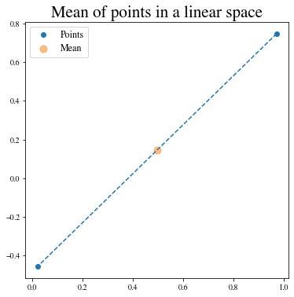
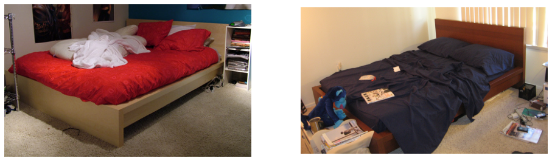
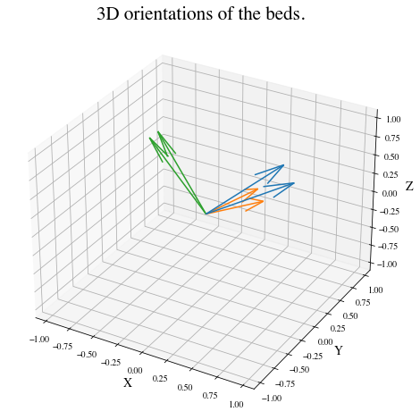
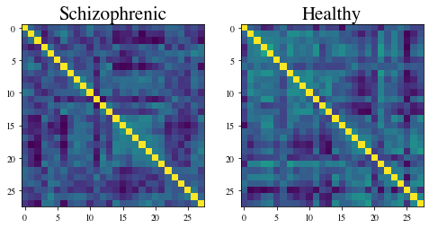
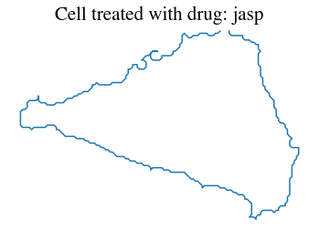
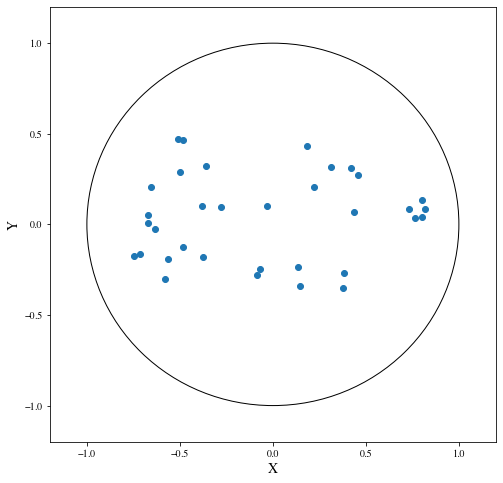

import os
import sys
import warnings
sys.path.append(os.path.dirname(os.getcwd()))
warnings.filterwarnings('ignore')Tutorial: Data on Manifolds
Setup
We import the backend that will be used for geomstats computations and set a seed for reproducibility of the results.
import geomstats.backend as gs
gs.random.seed(2020)INFO: Using numpy backendFinally, we import the visualization module.
import matplotlib
import matplotlib.colors as colors
import matplotlib.image as mpimg
import matplotlib.patches as mpatches
import matplotlib.pyplot as plt
from mpl_toolkits.mplot3d import Axes3D
from mpl_toolkits.mplot3d.art3d import Poly3DCollection
import geomstats.visualization as visualization
visualization.tutorial_matplotlib()From data on linear spaces to data on manifolds
The science of Statistics is defined as the collection of data, their analysis and interpretation. Statistical theory is usually defined for data belonging to vector spaces, which are linear spaces. For example, we know how to compute the mean of a data set of numbers, like the mean of students’ weights in a classroom, or of multidimensional arrays, like the average 3D velocity vector of blood cells in a vessel.
Here is an example of the computation of the mean of two arrays of dimension 2.
from geomstats.geometry.euclidean import Euclidean
dim = 2
n_samples = 2
euclidean = Euclidean(dim=dim)
points_in_linear_space = euclidean.random_point(n_samples=n_samples)
print('Points in linear space:\n', points_in_linear_space)
linear_mean = gs.sum(points_in_linear_space, axis=0) / n_samples
print('Mean of points:\n', linear_mean)Points in linear space:
[[ 0.97255366 0.74678389]
[ 0.01949105 -0.45632857]]
Mean of points:
[0.49602235 0.14522766]We plot the points and their mean on the 2D Euclidean space, which is a linear space: a plane.
%matplotlib inline
fig = plt.figure(figsize=(6, 6))
ax = fig.add_subplot(111)
ax.scatter(points_in_linear_space[:, 0], points_in_linear_space[:, 1], label='Points')
ax.plot(points_in_linear_space[:, 0], points_in_linear_space[:, 1], linestyle='dashed')
ax.scatter(
gs.to_numpy(linear_mean[0]),
gs.to_numpy(linear_mean[1]), label='Mean', s=80, alpha=0.5)
ax.set_title('Mean of points in a linear space')
ax.legend();
What happens to the usual statistical theory when the data doesn’t naturally belong to a linear space. For example, if we want to perform statistics on the coordinates of world cities, which lie on the earth: a sphere?
The non-linear spaces we consider are called manifolds. A manifold \(M\) of dimension \(m\) is a space that is allowed to be curved but that looks like an \(m\)-dimensional vector space in the neighborhood of every point.
A sphere, like the earth, is a good example of a manifold. We know that the earth is curved, but at our scale we do not see its curvature. Can we still use linear statistics when data are defined on these manifolds, or shall we?
Let’s try.
from geomstats.geometry.hypersphere import Hypersphere
sphere = Hypersphere(dim=dim)
points_in_manifold = sphere.random_uniform(n_samples=n_samples)
print('Points in manifold:\n', points_in_manifold)
linear_mean = gs.sum(points_in_manifold, axis=0) / n_samples
print('Mean of points:\n', linear_mean)Points in manifold:
[[-0.71502435 -0.41197257 -0.56481748]
[-0.997575 -0.04788171 0.05051201]]
Mean of points:
[-0.85629967 -0.22992714 -0.25715273]We plot the points and their mean computed with the linear formula.
%matplotlib inline
fig = plt.figure(figsize=(8, 8))
ax = fig.add_subplot(111, projection='3d')
visualization.plot(
points_in_manifold, ax=ax, space='S2', label='Point', s=80)
ax.plot(
points_in_manifold[:, 0],
points_in_manifold[:, 1],
points_in_manifold[:, 2],
linestyle='dashed', alpha=0.5)
ax.scatter(
linear_mean[0], linear_mean[1], linear_mean[2],
label='Mean', s=80, alpha=0.5)
ax.set_title('Mean of points on a manifold')
ax.legend();
What happened? The mean of two points on a manifold (the sphere) is not on the manifold. In our example, the mean city is not on the earth. This leads to errors in statistical computations.
print(sphere.belongs(linear_mean))FalseFor this reason, researchers aim to build a theory of statistics that is by construction compatible with any structure we equip the manifold with. This theory is called Geometric Statistics.
Geometric Statistics is a theory of statistics on manifolds, that takes into account their geometric structures. Geometric Statistics is therefore the child of two major pillars of Mathematics: Geometry and Statistics.
Examples of data on manifolds
Why should we bother to build a whole new theory of statistics? Do we really have data that belong to spaces like the sphere illustrated in introduction?
Let’s see some examples of data spaces that are naturally manifolds. By doing so, we will introduce the datasets and visualization modules of geomstats.
We first import the datasets.utils module that allows loading datasets.
import geomstats.datasets.utils as data_utilsWorld cities: data on the sphere
We load the dataset cities, that contains the coordinates of world cities in spherical coordinates.
data, names = data_utils.load_cities()
print(names[:5])
print(data[:5])['Tokyo', 'New York', 'Mexico City', 'Mumbai', 'São Paulo']
[[ 0.61993792 -0.52479018 0.58332859]
[-0.20994315 0.7285533 0.65202298]
[ 0.14964311 0.93102728 0.33285904]
[-0.27867026 -0.9034188 0.32584868]
[-0.62952884 0.6662902 -0.3996884 ]]We convert the spherical coordinates to X, Y, Z coordinates and verify that they belong to the sphere.
gs.all(sphere.belongs(data))TrueNow, we plot the cities on the sphere. We choose only a subset of the cities that have a nice rendering in the 2D plot of the 3D earth. This plot is nicer shown in an interactive 3D figure.
data, names = data_utils.load_cities()fig = plt.figure(figsize=(10, 10))
ax = fig.add_subplot(111, projection='3d')
visualization.plot(data[15:20], ax=ax, space='S2', label=names[15:20], s=80, alpha=0.5)
ax.set_title('Cities on the earth.');
Pose of objects in pictures: data on the Lie group of 3D rotations
We consider the dataset poses, that contains the 3D poses of objects in images. Specifically, we consider poses of beds in images, i.e. the 3D orientation of each bed within a given 2D image.
The orientation corresponds to a 3D rotation. A 3D rotation \(R\) is visually represented as the result of \(R\) applied to the coordinate frame \((e_x, e_y, e_z)\).
We first load the dataset.
data, img_paths = data_utils.load_poses()
img_path1, img_path2 = img_paths[0], img_paths[1]
img_path1 = os.path.join(data_utils.DATA_PATH, 'poses', img_path1)
img_path2 = os.path.join(data_utils.DATA_PATH, 'poses', img_path2)
img1 = mpimg.imread(img_path1)
img2 = mpimg.imread(img_path2)
fig = plt.figure(figsize=(16, 8))
ax = fig.add_subplot(121)
imgplot = ax.imshow(img1)
ax.axis('off')
ax = fig.add_subplot(122)
imgplot = ax.imshow(img2)
ax.axis('off')
plt.show()
We import the manifold of 3D rotations: the Special Orthogonal group in 3D, \(SO(3)\). We choose to represent the 3D rotations as rotation vectors, hence: point_type='vector'.
from geomstats.geometry.special_orthogonal import SpecialOrthogonal
so3 = SpecialOrthogonal(n=3, point_type='vector')We verify that the poses belong to the space of 3D rotations.
gs.all(so3.belongs(data))TrueWe plot the orientations of the first 2 beds.
fig = plt.figure(figsize=(8, 8))
ax = fig.add_subplot(111, projection='3d')
visualization.plot(data[:2], ax=ax, space='SO3_GROUP')
ax.set_title('3D orientations of the beds.');
These orientations are very close, as expected from the corresponding images.
Brain connectomes: data on the manifold of Symmetric Positive Definite (SPD) matrices
We consider the dataset connectomes that contains brain functional connectomes from the MSLP 2014 Schizophrenia Challenge. The dataset correponds to the Functional Connectivity Networks (FCN) extracted from resting-state fMRIs of 86 patients at 28 Regions Of Interest (ROIs). Roughly, an FCN corresponds to a correlation matrix and can be seen as a point on the manifold of Symmetric Positive-Definite (SPD) matrices.
We can load the dataset.
data, patient_ids, labels = data_utils.load_connectomes()We plot the first two connectomes from the MSLP dataset with their corresponding labels.
labels_str = ['Healthy', 'Schizophrenic']
fig = plt.figure(figsize=(8, 4))
ax = fig.add_subplot(121)
imgplot = ax.imshow(data[0])
ax.set_title(labels_str[labels[0]])
ax = fig.add_subplot(122)
imgplot = ax.imshow(data[1])
ax.set_title(labels_str[labels[1]])
plt.show()
We check that the connectomes belong to the space of SPD matrices.
import geomstats.geometry.spd_matrices as spd
manifold = spd.SPDMatrices(28)gs.all(manifold.belongs(data))TrueMonkey’s optical nerve heads: Data as landmarks in 3D
We consider 22 images of Rhesus monkeys’ eyes (11 monkeys), acquired with a Heidelberg Retina Tomograph and available in (PE2015). For each monkey, an experimental glaucoma was introduced in one eye, while the second eye was kept as control. One seeks a significant difference between the glaucoma and the control eyes. On each image, 5 anatomical landmarks were recorded: - 1st landmark: superior aspect of the retina, - 2nd landmark: side of the retina closest to the temporal bone of the skull, - 3rd landmark: nose side of the retina, - 4th landmark: inferior point, - 5th landmark: optical nerve head deepest point.
Label 0 refers to a normal eye, and Label 1 to an eye with glaucoma.
Reference:
(PE2015) Patrangenaru and L. Ellingson. Nonparametric Statistics on Manifolds and Their Applications to Object Data, 2015. https://doi.org/10.1201/b18969
We load the dataset of landmarks’ sets and corresponding labels.
nerves, labels, monkeys = data_utils.load_optical_nerves()
print(nerves.shape)
print(labels)
print(monkeys)(22, 5, 3)
[0 1 0 1 0 1 0 1 0 1 0 1 0 1 0 1 0 1 0 1 0 1]
[ 0 0 1 1 2 2 3 3 4 4 5 5 6 6 7 7 8 8 9 9 10 10]We extract the landmarks’ sets corresponding to the two eyes’ nerves of the first monkey, with their corresponding labels.
two_nerves = nerves[monkeys==0]
print(two_nerves.shape)
two_labels = labels[monkeys==0]
print(two_labels)(2, 5, 3)
[0 1]label_to_str = {0: 'Normal nerve', 1: 'Glaucoma nerve'}
label_to_color = {0: (102/255, 178/255, 255/255, 1.), 1: (255/255, 178/255, 102/255, 1.)}
fig = plt.figure()
ax = Axes3D(fig)
ax.set_xlim((2000, 4000))
ax.set_ylim((1000, 5000))
ax.set_zlim((-600, 200))
for nerve, label in zip(two_nerves, two_labels):
x = nerve[:, 0]
y = nerve[:, 1]
z = nerve[:, 2]
verts = [list(zip(x,y,z))]
poly = Poly3DCollection(verts, alpha=0.5)
color = label_to_color[int(label)]
poly.set_color(colors.rgb2hex(color))
poly.set_edgecolor('k')
ax.add_collection3d(poly)
patch_0 = mpatches.Patch(color=label_to_color[0], label=label_to_str[0], alpha=0.5)
patch_1 = mpatches.Patch(color=label_to_color[1], label=label_to_str[1], alpha=0.5)
plt.legend(handles=[patch_0, patch_1], prop={'size':20})
plt.show()
We observe that the shape of the optical nerve head on the eye with glaucoma is different from the shape of the optical nerve head on the normal eye.
Cell shapes: Data as curves in 2D
We load the dataset of cells.
The cells have been treated with one of three treatments: - control (no treatment), - jasp (jasplakinolide), or - cytd (cytochalasin D).
These treatments are drugs which perturb the cytoskelet of the cells, and thus the shapes of their boundaries.
cells, cell_lines, treatments = data_utils.load_cells()We check that the dataset of cells belongs to the manifold of discrete curves.
from geomstats.geometry.discrete_curves import DiscreteCurves
from geomstats.geometry.euclidean import Euclidean
r2 = Euclidean(2)
planar_curves_space = DiscreteCurves(r2)
result = planar_curves_space.belongs(cells)
gs.all(result)TrueWe show one of the cells.
cell_id = 500
cell = cells[cell_id]
plt.plot(cell[:, 0], cell[:, 1])
plt.axis('equal')
plt.title(f"Cell treated with drug: {treatments[cell_id]}")
plt.axis('off');
Social networks: data on the hyperbolic space
We consider the dataset
karate_graph, that contains the network of the social interactions of the 34 members of a karate club, for a period of three years from 1970 to 1972. During the study a conflict arose between the administrator and instructor, which led to the split of the club into two. This dataset has been widely used in the machine learning literature as a case-study of clustering on graphs.We load the dataset.
Next, we embed the karate graph into the hyperbolic space.

In this plot, each dot represents a member of the Karate club. The nodes of the social networks have been embedded in the hyperbolic plane. We refer to the notebook
embedding_graph_structured_data_h2for details on the embedding of networks in the hyperbolic space and the advantages of such procedure.